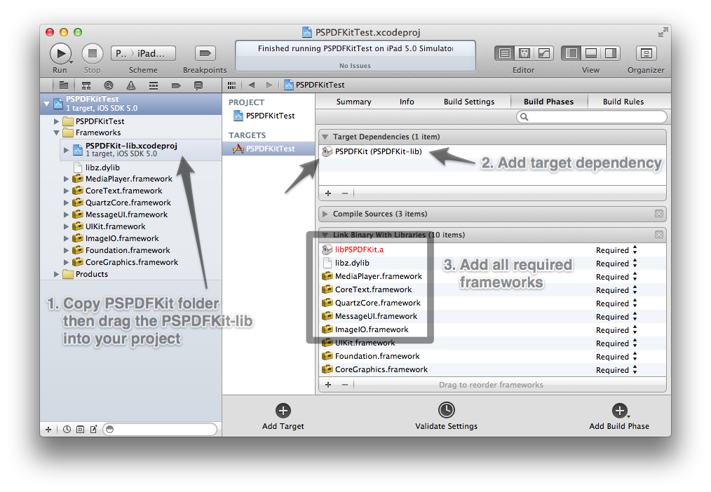
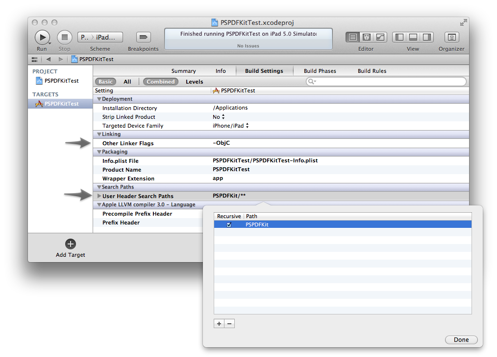
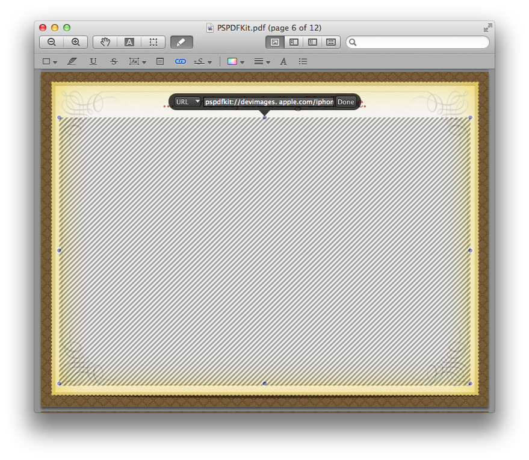

Class Documentation
Integration
There are two ways to integrate PSPDFKit: The binary framework, which is basically drop-in and you're good, and adding the PSPDFKit-lib.xcodeproj file as a dependency. You get the PSPDFKit-lib only if you purchased the source code. Use the PSPDFKit-lib if possible, this enables easy source code lookup. If you use PSPDFKit-lib, you need to place the PSPDFKit folder in the same directory as your main .xcodeproj file is.
If you're using the PSPDFKit.framework, you don't need to add a User Header Search Path or a Target Dependency. Also, don't forget to add the PSPDFKit.bundle inside PSPDFKit.framework/Resources.
If you are using the PSPDFKit.framework binary version, still need to support iOS4 and not yet using ARC, you need to add libarclite_iphoneos.a and libarclite_iphonesimulator.a (the ARC compatibility library) next to PSPDFKit. It's really easy, check the MinimalExample.xcodeproj - you can just drag the two files to your project, or add them manually. (/Applications/Xcode.app/Contents/Developer/Platforms/iPhoneOS.platform/Developer/usr/lib/arc/libarclite_iphoneos.a and /Developer/usr/lib/arc/libarclite_iphonesimulator.a. (If your system is missing libarclite_iphonesimulator.a, download it from here) Xcode is clever enough to figure this out automatically when you're using the PSPDFKit-lib.xcodeproj as a subproject.
You also need to weak-link the UIKit.framework to be compatible with iOS4.
PSPDFKit needs Xcode ≥ 4.3.1, iOS Base SDK ≥ 5.1 and ≥ Clang LLVM 3.1 to compile. It doesn't work with the old LLVM GCC compiler.
 Open the PSPDFViewController with a simple call:
See MinimalExample for a working demo. You need at least CoreText.framework, QuartzCore.framework, MessageUI.framework, libz.dylib, ImageIO.framework, CoreMedia.framework, MediaPlayer.framework, AVFoundation.framework, and the linker flag -ObjC (see QA1490 for details)
Logging
The log level can be set at runtime, from anywhere in your project. The default log level is PSPDFLogLevelError.
If you see memory problems, you can (as a alternative to Instruments) also use the integrated memory logger. It's usually easier to spot specific problems than with Instruments.
Localization
See the PSPDFKit.bundle file for basic translation. It's either inside your PSPDFKit folder or inside PSPDFKit.framework/Resources.
Warning! This includes english and german. You need to remove those languages that you don't support; If you keep german then iTunes Connect will show german as a supported language, even if you only have a subset translated.
(Set before displaying a PSPDFViewController, AppDelegate is a good place)
Multimedia Overlay Features
Multimedia annotations are supported. Those can be created with Mac Preview.app or Adobe Acrobat. Create a URL annotation and use pspdfkit:// as the url scheme instead of http. The system will auto-detect the correct end correct point. Supported are:
- - Video (m3u8, mov, avi, mpg, m4v - formats that are supported by iOS)
- - YouTube. The system tries to fetch the mp4 url, if you want to omit that, add [legacy:YES] as option. (e.g. pspdfkit://[legacy:YES]youtube.com/watch?v=0DSCFQcR08E)
- - Audio (mp3, m4a, mp4)
- - Images (jpg, png, tiff, tif, bmp)
- - Inline Web Pages
- - Modal Web Pages (e.g. pspdfkit://[modal:YES,size:500x500]http://apple.com. Size is optional and only honored on iPad. Inline Web Browser can also enabled with changing linkAction in PSPDFViewController.
- - Any custom UIView with using the delegate methods.
For example, pspdfkit://devimages.apple.com/iphone/samples/bipbop/bipbopall.m3u8 will show the Apple HTTP Live streaming test page. There are delegate methods if you need more control. (like manually setting auto play, adding custom annotations)

If you want to display local files, use pspdfkit://localhost/file.xy. The Path is automatically set to the bundle path. Supported folders include Bundle, Documents and Cache.
You can enable autostart with adding the option like here: pspdfkit://[autostart:true]devimages.apple.com/iphone/samples/bipbop/bipbopall.m3u8
Note: YouTube-Links are not displayed as a inline-thumbnail on the iPhone if the PSPDFViewController is displayed modally. This is a workaround for a known Apple bug, where the UINavigationController breaks after the control returns from fullscreen.
Troubleshooting
Q: I can't download the package anymore!
A: I had to update the links. Please replace the part in your private link "http://petersteinberger.com/assets/" with "http://download.pspdfkit.com" and it will work again.
Q: I upgraded from Demo to Binary/Source, but the "PSPDFKit-Demo" text doesn't disappear.
A: You have either delete your app on the Simulator/Device or explicitly call [[PSPDFCache sharedPSPDFCache] clearCache] to remove the demo text. Also be sure to check your linker settings, so that you don't accidentally link a demo version of the framework.'
Q: Everything works perfectly, but when I use pdf XYZ, your application crashes (this only happens on the device)
A: While there are many ways in place to minimize memory usage when rendering is working, some pdf are just _too complicated_ for iOS - meaning drawing is too complex, taking too much memory. There is a hard limit of 64MB for every application, and you most likely get killed by the system before getting that much anyway. While testing, we encountered pdfs that needed as much as 300MB for drawing - no way you can to this on iOS. One way to fix this problem is to remove complex vector stuff, many times simple re-saving it in Preview.app solves many issues.
Q: Search usually works fine, but it work on pdf XYZ, where it only shows garbage.
A: Your pdf most likely uses Identity-H fonts with or without CMaps. This is something not [yet] supported. We plan on improving the text extraction algorithms in the future, but for now mostly unicode-saved text can be searched. Search Highlighting is still in beta, so don't expect it to work on every document. We're working on improving it. You can disable highlighting or switch back to classic search via the .documentSearcher class in PSPDFDocument.
Q: The pdf is fine in Adobe Acrobat (R), but there are missing images/fonts on the iPad.
A: On iOS, the Quartz-Render-Engine is used. While overall very compatible, there are some differences in interpreting the >1000-pages pdf reference. And some newer variants may not be implemented at all. Because Apple shares most of their foundation code, please check your pdf in Preview.app first. If there are rendering problems, open it in Adobe Acrobat and re-save it File -> Save as... -> Reduced Size PDF, and select under "Make compatible with" an earlier pdf version. We had good experiences with 4.0 or 5.0. Note: File size may increase because of the older format.
If you experience problems with transparency (differences between Apple's rendering engine and Adobe's), it's also worth trying the highest possible version. One customer reported good results using PDF/X4-2008 and Acrobat 8/9 (PDF 1.7).
Q: In Adobe Acrobat, hyperlinks are clickable, but in PSPDFKit, some or all of them are not marked as touch-able.
A: Adobe Acrobat and to some extend also Preview.app use custom in-text hyperlink detection to create annotations on the fly. This is nothing the PDF references specifies, and is also currently not supported my PSPDFKit. As a workaround, make proper link annotations out of your hyperlinks. This can be accomplished easily with Adobe Acrobat or Preview.app.
Q: When I use the source, there are compile errors/warnings.
A: You most likely use and old Xcode and/or compiler. PSPDFKit is designed for Xcode ≥ 4.2 (with iOS SDK ≥ 5.0) and LLVM/Clang. It may compile with GCC, but it's not really tested on it. Switch to Clang, it's faster both on compile time *and* emits faster binary code. Also, Xcode 3 is dead (it doesn't run on Lion anymore).
If you get linker errors about missing symbols, be sure that your project includes the above listed frameworks and the linker flag -ObjC.
Also, check that you correctly included the combined header file PSPDFKit.h. When using the framework, add '#import
Q: Help! I'm getting the crash dyld: lazy symbol binding failed: Symbol not found: _objc_retainAutorelease.
A: To support iOS4 with a non-ARC-project, you need to add the ARC compatibility library libarclite. Drag the two files (one for iOS, one for the Simulator) from the MinimalExample.xcodeproj to your project, or manually search the on your disk: /Developer/Platforms/iPhoneOS.platform/Developer/usr/lib/arc/libarclite_iphoneos.a (and /Developer/usr/lib/arc/libarclite_iphonesimulator.a) and drag them into your project.
Q: Is PSPDFKit AppStore-safe?
Yes. There are some private APIs that _can_ be used in DEBUG mode (e.g. for memory debugging), but that's automatically compiled out in non-debug builds. There are lots of apps in the store using PSPDFKit, like this one.
Q: Do I need to buy another license to make a second app?
A: Yes, the license is per app bundle id. If you're already a customer, email us to get a coupon for a discounted second license. There is also the option for an all-in license, contact us if interested.
Q: How do I change the link-color of pdf annotation links?
A: Use PSPDFViewControllerDelegate like this:
Appcelerator Titanium Module
PSPDFKit is also available as an Appcelerator Titanium Module. See the in the module included app.js for working example code. Note that currently only a practical subset of the features of the ObjC-Version are exposed via the JavaScript bridge. This will be expanded on a need-basis.
You need to have at least Xcode 4.3 installed. If you're getting errors like "unrecognized selector sent to instance", chances are high that your Xcode is too old.
How to report a bug
While Apple's devices are magical, my clairvoyant abilities are not. Please provide your environment (Xcode version, Base SDK, iOS Version, Device generation) and the PSPDFKit version. You'll find this in PSPDFKit.framework/Resources/Info.plist.
Next, a stack trace or even an example project will really help. If you don't get a stack trace ("it just closes"), it's a memory problem, which I may or may not be able to help. Some pdf's are just too large to be rendered on iOS limited 64MB per app limit at all. In this case, you can use Adobe Acrobat or Preview and try to re-save it in a smaller PDF version, which most likely also reduces complexity. Also, enable the global variable kPSPDFKitAllowMemoryDebugging in your AppDelegate to see a detailed log about memory usage. Please copy and send this log with the bug report.
If you see errors like EXEC_BAD_ACCESS, it's most likely a dangling pointer/memory corruption, which can also be from your app. Be sure to enable NSZombie (in Xcode Edit Scheme... -> Diagnostics -> Enable Zombie Objects and Malloc Stack), so you'll see the object with invalid memory management.
Note that I can't help if you use outdated technology. Only latest-1 is supported (which currently is Xcode 4.3/4.3.1 and Base SDK 5.0/5.1 - all with Clang Compiler only.)
In general, because PSPDFKit is widely used, it's pretty damn stable, so be sure to check your app first.
License
Evaluation License The following license applies to the free trial versions of the software components. Copyright (c) 2010-2012, Peter Steinberger All rights reserved. Redistribution of this software, in either source or binary form is prohibited. Use of this software is permitted under the following conditions: * The software is used for evaluation purposes, with a view to purchasing a commercial development license. OR * The software is used for non-commercial educational purposes. In all cases, the software's object code may not be submitted to Apple's App Store This software is provided by Peter Steinberger "as is" and any express or implied warranties, including, but not limited to, the implied warranties of merchantability and fitness for a particular purpose are disclaimed. In no event shall Peter Steinberger be liable for any direct, indirect, incidental, special, exemplary, or consequential damages (including, but not limited to, procurement of substitute goods or services; loss of sue, data or profits; or other business interruption) however caused and on any theory of liability, whether in contract, strict liability, or tort (including negligence or otherwise) arising in any way out of the use of this software, even if advised of the possibility of such damage. Commercial Development License The following license applies to software components purchased and paid for in full. Copyright (c) 2010-2012, Peter Steinberger All rights reserved. Redistribution and use of this software is permitted in binary form under the following conditions: * The software must be distributed only as part of a larger original work by the licensee; verbatim redistribution of the software as licensed is prohibited. * The software may only be distributed as a software application readily executable by end users on designated devices designed by Apple Inc. running the iOS operating system. Redistributing the software in re-linkable "library" form is explicitly prohibited. * The software's binary object code must be statically linked to the application to form a single binary file. * No source or header files may be redistributed. * Neither the names PSPDFKit or Peter Steinberger, nor the names of its contributors may be used to endorse or promote products derived from this software without specific prior written permission. * The license has not been terminated by licensee. * The licensee has separately licensed the required "iOS SDK" software from Apple Inc. You agree that with purchasing the software you allow Peter Steinberger to list your company and/or company products on the PSPDFKit website. If you do not agree to this, an additional fee can be paid to remove this right. The license your purchased, unless otherwise negotiated, is valid for one bundle identifier, thus one iOS application. Redistribution and use of the software is permitted in binary and/or source form under the following conditions: The recipient has purchased a separate, independent license for the software from Peter Steinberger. The redistributed software is governed by that license. Any modifications to the software by the licensee are to be marked clearly as such. This software is provided by Peter Steinberger "as is" and any express or implied warranties, including, but not limited to, the implied warranties of merchantability and fitness for a particular purpose are disclaimed. In no event shall Peter Steinberger be liable for any direct, indirect, incidental, special, exemplary, or consequential damages (including, but not limited to, procurement of substitute goods or services; loss of sue, data or profits; or other business interruption) however caused and on any theory of liability, whether in contract, strict liability, or tort (including negligence or otherwise) arising in any way out of the use of this software, even if advised of the possibility of such damage.